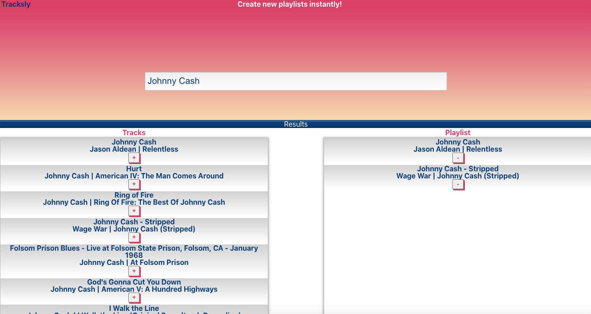
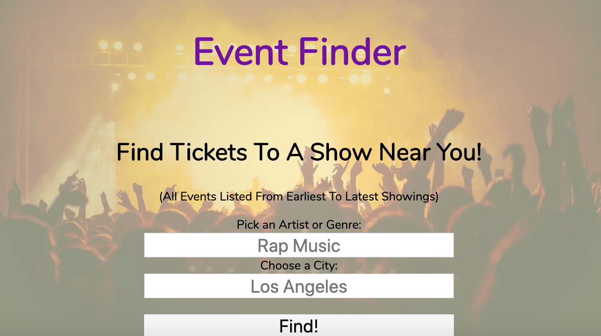
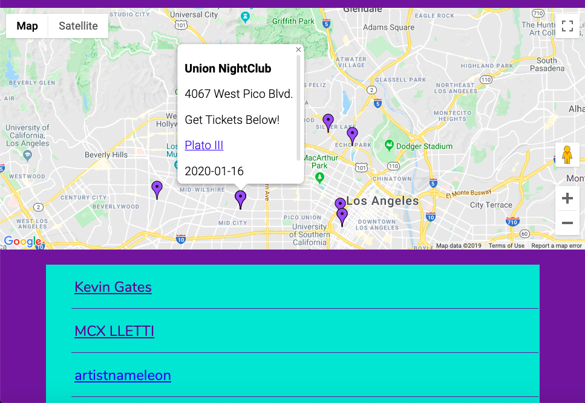

Hi, I'm Ben! I'm a front-end developer based in Los Angeles
About Me
I have a passion for solving problems and building unique websites and applicaitons. Putting the pieces together and watching it all come to life is what excites me the most. I would love nothing more than to be a part of a team of amazing programmers, contirubting to help create greatness.
Outside of writing code, I'm currently a Field Radio Operator in the United States Marine Corps Reserve, and I enjoy playing guitar, loud concerts, and drinking cold beer with friends.
Portfolio
React Spotify API Web App
This project is built around Spotify's playlist API. It uses the React Router to create a single page application which allows a user search for songs, and create and upload playlists to their Spotify account pending authentication.
Tracksly was built using React.js and CSS.
Live AppGitHub Repo

Asynchronous API Web App
For this project, the goal was to build an app that utilizes two different API's to achieve a single result. In this case, the API's for Google Maps and Ticketmaster were used. Users are able to search for a type of event (such as jazz music) in the city of their choosing, which will then display a map with 'Markers' dropped for each event, alongside a list of the upcoming events in order from earliest to latest date showing. Users can navigate through either option to be taken to a website where they can purchase tickets to their selected events.
This app was built using a combination of HTML, CSS, JavaScript, and jQuery.
Live AppGitHub Repo


Space Quiz Web App
The goal of this project was to build a responsively designed, functioning quiz that would seamlessly allow users to navigage through one question at a time, while displaying their current score and question number, alerting them to any correct and incorrect answers, and displaying their final score at the end with a chance to retake the quiz.
I built this quiz using HTML, CSS, JavaScript, and jQuery.
Live AppGitHub Repo